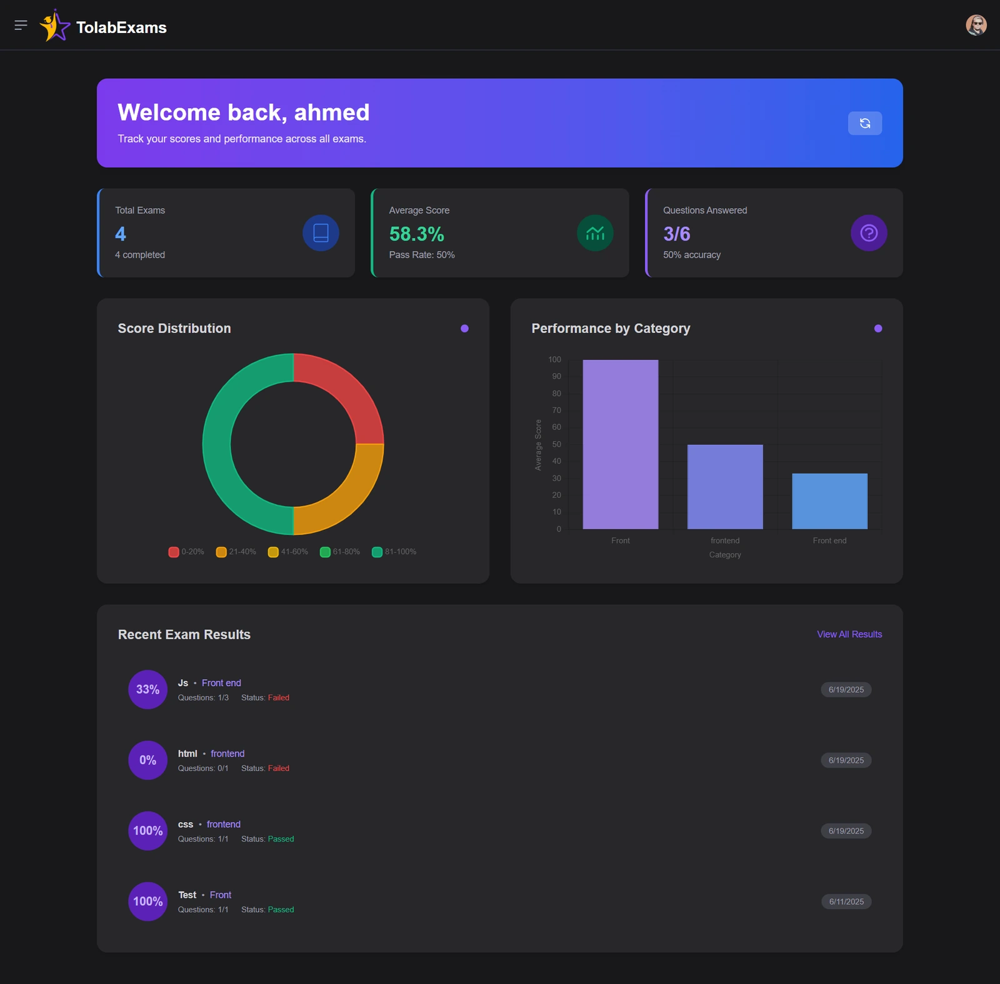

TolabExam
Secure online exams with live monitoring and clear analytics

The problem
Online exams need two things that pull against each other: an easy experience for students and enough control for instructors to trust the results. TolabExam gives instructors real-time visibility while exams run, and a dashboard that shows how students performed.
What I built
- Real-time student monitoring while an exam is in progress.
- Analytics dashboards with Chart.js for scores and performance.
- Role-based access with secure JWT authentication, so students and instructors only see what they should.
- Angular front end styled with Tailwind CSS.
- Express API with Prisma ORM over PostgreSQL.
Technical choices
- JWT with roles keeps each request authorised without server-side session state.
- Prisma gives typed database access and clear, reviewable migrations.
- Chart.js turns raw results into charts instructors can read at a glance.
- Angular's structure suits a large, form-heavy application like an exam system.
Stack
AngularTailwind CSSChart.jsNode.jsExpressPrisma ORMPostgreSQLJWT